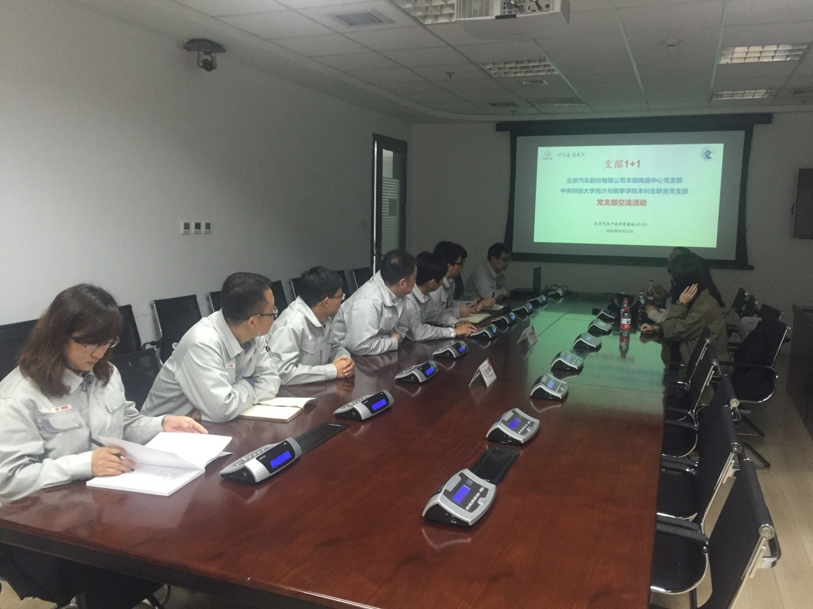

支部共建促发展
——记“红色1+1”党支部交流活动
2016年10月12日下午四点，由北京汽车股份有限公司本部商品中心党支部和中央财经大学统计与数学学院本科生联合党支部共同开展的“红色1+1”第二次党支部交流活动在北京汽车产业研发基地举行。参与这次交流活动的有北汽商品中心商品企划科科长兼商品中心党支部组织委员乔志伟与几名党支部党员代表，以及统计与数学学院2015-2016级本科生联合党支部书记郭珺与三名入党积极分子。

此次交流活动中，双方在第一次交流的基础上就党建活动，支部共建以及活动意义和收获等方面进行了更为深入的探讨及交流。首先，双方都对所在支部的规模、现状以及发展需求进行了详细的介绍，互相都有了更深的了解。紧接着，双方对于党建活动及支部发展交换了想法，旨在培养出综合素质更高的优秀党员，同时也为支部成员提供更好的发展机会和平台。其中包括，定期开展主题教育活动和党校培训，建设学习型党组织；建立更为完善的支部成员考核评价机制，定期对先进个人进行表彰，提高支部成员的积极性和创造性；丰富党员活动，认真做好党员发展工作；加强网络平台宣传阵地建设等。
在支部共建方面，由统数学院本科生联合党支部设计的支部共建的网站，以及为北汽商品中心进行的市场数据分析都得到了对方的极力好评。在商讨了后续更多的合作及共建方式之后，双方最终对于支部共建达成了共识。北汽商品中心党支部十分愿意为我党支部的本科生们提供更多相关的市场数据以及宝贵的实习机会，让学生们能将所学知识更早更好地运用于实际，接触实际工作，锻炼自身的专业技术能力。而中央财经大学统计与数学学院本科生联合党支部为北汽商品中心党支部提供数据分析结果以及相关的专业知识，如关于大数据的讲座以及一些处理数据的方法。这都将让两个党支部走向双赢。
此后，三名北汽商品中心党支部的三名党员代表针对“红色1+1”活动的时效性以及活动的深刻意义发表了自己的感想与体会。他们表示，与中央财经大学统计与数学学院本科生联合党支部共同开展的“红色1+1”活动具有积极的现实意义。一方面大学生让企业中吹入了一股青春与活力之风。另一方面，企业员工能通过讲座以及支部共建网站上的教学视频利用碎片化学习，提升个人能力。北汽商品中心党支部组织委员乔志伟强调，在当今的大数据时代，商品销售、产品生产及市场调研等方面都离不开数据与数据分析，他们对运用大数据进行产品规划的需求，与统计与数学学院的所有专业及相关知识相契合。此次“红色1+1”活动具有指导性意义。
（北汽商品中心党支部组织委员乔志伟发言）
通过此次交流活动，双方对于“红色1+1”活动以及后续的合作与共同发展充满了信心及期待。最后，北汽商品中心党支部的代表们带领我们参观了公司本部的产品展厅、工作区以及休闲区，并对公司进行了全方位的介绍。一起品尝了咖啡之后，此次交流活动在轻松愉快的气氛中结束。